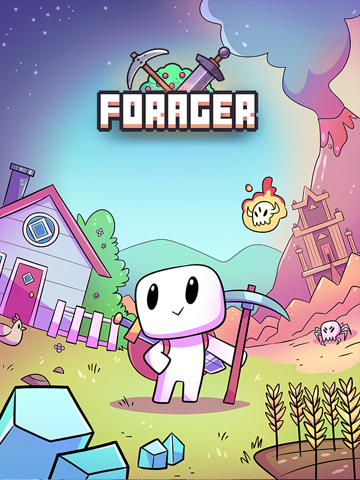

Forager
Forager
Details
|  | |
| Playtime | 26m 0s |
| Last Activity | 02/05/2024 1:00:02 |
| Added | 03/05/2024 16:13:29 |
| Modified | 17/05/2025 23:48:07 |
| Completion Status | Played |
| Library | Steam |
| Source | Steam |
| Platform | PC (Windows) |
| Release Date | 18/04/2019 |
| Community Score | 75 |
| Critic Score | 70 |
| User Score | |
| Genre | Adventure Indie Puzzle Role-playing (RPG) Simulator Strategy |
| Developer | Hop Frog Hop Frog |
| Publisher | Humble Bundle Humble Games |
| Feature | Single Player |
| Links | Official Steam YouTube Wikipedia GOG iPhone iPad Twitch |
| Tag | 2D Adventure Agriculture Base Building Building Casual Crafting Exploration Farming Sim Indie Multiplayer Open World Open World Survival Craft Pixel Graphics Resource Management RPG Sandbox Simulation Singleplayer Survival |
Description
Forager is a 2D open world game inspired by exploration, farming and crafting games such as Stardew Valley, Terraria & Zelda.

Start small and improve your base, skills, equipment, network of friends (and enemies!) and build your future as you see fit! You can play Forager in a very varied array of playstyles...


- Gather, collect and manage resources.
- Craft useful items & structures.
- Build and grow a base out of nothing. Buy land to expand and explore.
- Level up and learn new skills, abilities, and blueprints.
- Solve puzzles, find secrets and raid dungeons!
- Achieve anything you want! The choice is yours, you set your own goals to work towards!
Start small and improve your base, skills, equipment, network of friends (and enemies!) and build your future as you see fit! You can play Forager in a very varied array of playstyles...
BECOME... A GATHERER
BECOME... A FARMER
BECOME... A MERCHANT
BECOME... AN ADVENTURER
BECOME... A BUILDER